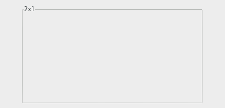

| GTK+ 2.0 Tutorial using Ocaml | ||
|---|---|---|
| <<< Previous | Container Widgets | Next >>> |
The aspect frame widget is like a frame widget, except that it also enforces the aspect ratio (that is, the ratio of the width to the height) of the child widget to have a certain value, adding extra space if necessary. This is useful, for instance, if you want to preview a larger image. The size of the preview should vary when the user resizes the window, but the aspect ratio needs to always match the original image.
To create a new aspect frame use GBin.aspect_frame:
val GBin.aspect_frame : ?obey_child:bool -> ?ratio:float -> ?xalign:Gtk.clampf -> ?yalign:Gtk.clampf -> ?label:string -> ?label_xalign:Gtk.clampf -> ?label_yalign:Gtk.clampf -> ?shadow_type:Gtk.Tags.shadow_type -> ?border_width:int -> ?width:int -> ?height:int -> ?packing:(GObj.widget -> unit) -> ?show:bool -> unit -> aspect_frame |
xalign and yalign specify alignment as with Alignment widgets. If obey_child is true, the aspect ratio of a child widget will match the aspect ratio of the ideal size it requests. Otherwise, it is given by ratio.
To change the options of an existing aspect frame, you can use:
method set_xalign : float -> unit method set_yalign : float -> unit method set_ratio : float -> unit method set_obey_child : bool -> unit |
As an example, the following program uses an AspectFrame to present a drawing area whose aspect ratio will always be 2:1, no matter how the user resizes the top-level window.

(* file: aspectframe.ml *)
let main () =
(* Create a new window; set title and border width *)
let window = GWindow.window ~title:"Aspect Frame" ~border_width:10 () in
(* Here we connect the "destroy" event to a signal handler *)
window#connect#destroy ~callback:GMain.Main.quit;
(* Create a Frame
* Set the frame's label
* Align the label at the right of the frame
* Set the style of the frame *)
let aspect_frame = GBin.aspect_frame ~label:"2x1"
~xalign:0.5 (* center x *)
~yalign:0.5 (* center y *)
~ratio:2.0 (* xsize/ysize = 2.0 *)
~obey_child:false (* ignore child's aspect *)
~packing:window#add () in
(* Now add a child widget to the aspect frame *)
(* Ask for a 200x200 widnow, but the AspectFrame will give us a 200x100
* window since we are forcing a 2x1 aspect ratio *)
let drawing_area = GMisc.drawing_area ~width:200 ~height:200 ~packing:aspect_frame#add () in
window#show ();
GMain.Main.main ()
let _ = Printexc.print main () |
| <<< Previous | Home | Next >>> |
| Frames | Up | Paned Window Widgets |